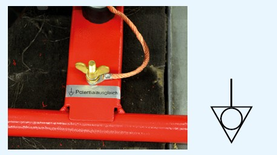
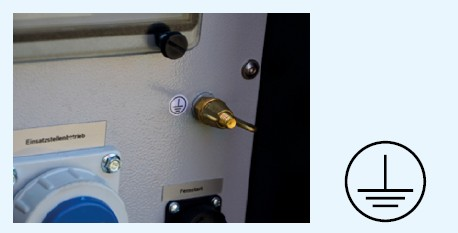
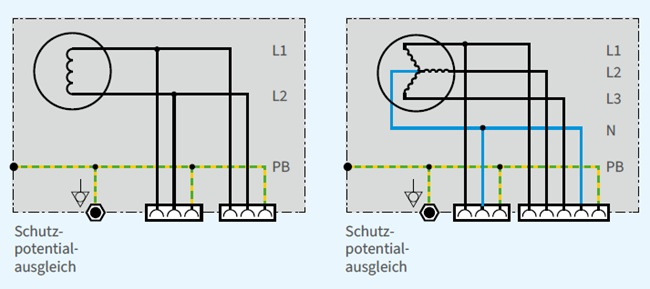
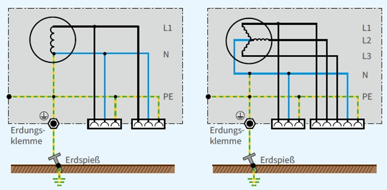
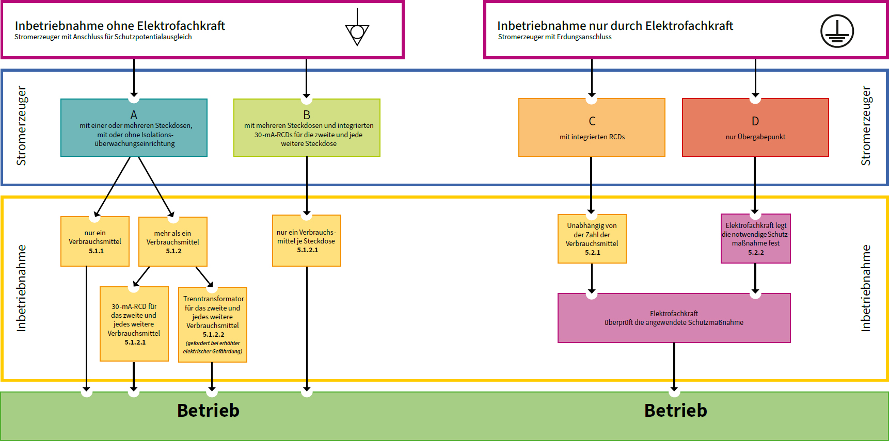

Stromerzeuger haben eine Anschlussklemme/-schraube, die in der Regel mit dem Symbol  gekennzeichnet ist.
gekennzeichnet ist.
Diese dient entweder dem Zweck der Erdung oder der Herstellung eines Schutzpotentialausgleichs. Für eine eindeutige Identifizierung muss das zutreffende Symbol angebracht sein.
Der Verwendungszweck der Anschlussklemme ist
Zur Auswahl der Schutzmaßnahme muss der Unternehmer oder die Unternehmerin vor der Inbetriebnahme eines Stromerzeugers klären, welche technische Ausführung vorliegt.
Nachstehend werden zwei gängige Ausführungen von Stromerzeugern beschrieben.

Abb. 2 Symbol 5021 "Schutzpotentialausgleich" nach DIN IEC 60417

Abb. 3 Symbol 5019 "Schutzerdung" nach DIN IEC 60417
Der Schutzpotentialausgleich ist im Stromerzeuger nicht mit einem aktiven Leiter/Sternpunkt verbunden. Erforderliche Maßnahmen siehe Abschnitt 5.1.

Abb. 4 Stromerzeuger ein- und dreiphasig ohne Erdungsanschluss mit Anschluss für Schutzpotentialausgleich (PB)
Der herausgeführte PE ist im Stromerzeuger mit einem aktiven Leiter verbunden.
Erforderliche Maßnahmen siehe Abschnitt 5.2.

Abb. 5 Stromerzeuger ein- und dreiphasig mit Erdungsanschluss (PE)

Abb. 6 Ausführungen von Stromerzeugern